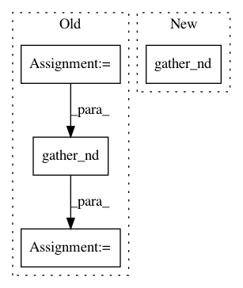

0c63b9dcd7ee3da39c74379a01d16e3a360d3506,niftynet/layer/resampler.py,ResamplerLayer,_resample_inv_dst_weighting,#ResamplerLayer#Any#Any#,178
Before Change
self.boundary_func(tf.ceil(sample_coords), b_size)], axis=0)
// find N weights associated to each output point
all_coords_f = tf.to_float(all_coords)
diff = tf.stack(
[tf.squared_difference(sample_coords, all_coords_f[0]),
tf.squared_difference(sample_coords, all_coords_f[1])])
point_weights = tf.gather_nd(diff, weight_id)
point_weights = tf.reduce_sum(point_weights, axis=1)
// skip this as power = 2:
// self.power = 2
// point_weights = tf.pow(point_weights, self.power / 2.0)
After Change
// gather_nd for both matrix, the same as:
// point_weights = tf.gather_nd(diff, weight_id)
// knots_id = tf.gather_nd(all_coords_f, weight_id)
n_val = tf.gather_nd(tf.stack([diff, all_coords_f], axis=-1), weight_id)
n_val = tf.unstack(n_val, axis=-1)
point_weights, knots_id = n_val[0], n_val[1]
point_weights = tf.reduce_sum(point_weights, axis=1)
In pattern: SUPERPATTERN
Frequency: 3
Non-data size: 4
Instances
Project Name: NifTK/NiftyNet
Commit Name: 0c63b9dcd7ee3da39c74379a01d16e3a360d3506
Time: 2017-10-26
Author: wenqi.li@ucl.ac.uk
File Name: niftynet/layer/resampler.py
Class Name: ResamplerLayer
Method Name: _resample_inv_dst_weighting
Project Name: NifTK/NiftyNet
Commit Name: 6b48055fdfe3c628833ed26ca394ef2fb1d97f82
Time: 2017-10-26
Author: wenqi.li@ucl.ac.uk
File Name: niftynet/layer/resampler.py
Class Name: ResamplerLayer
Method Name: _resample_nearest
Project Name: NifTK/NiftyNet
Commit Name: 534c4dc7423681faab78d1829c1ec3c31ffb8330
Time: 2018-01-30
Author: wenqi.li@ucl.ac.uk
File Name: niftynet/layer/resampler.py
Class Name: ResamplerLayer
Method Name: _resample_inv_dst_weighting